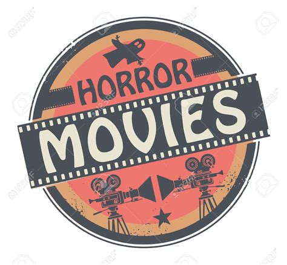

<!Doctype html>
<html>
<head>
    <title>Goals & Aspirations</title>
</head>
</html>

<h1 style="background-color: khaki">Goals & Aspirations</h1>
<body style="background-color: lavender;">
<H2 style="background-color: darksalmon">Five Year Plan</H2>
<ul style="font-size: xx-large">
    <LI>1-2 Yr. - Graduate School</LI>
    <Li>3-4 Yr. - Production Company position (Entry -level)</Li>
    <Li>5 Yr. - Beginning my career in Film Production</Li>
</ul>
</body>
<h3 style="font-family: Georgia,serif;"> 1 to 2 years:
    Graduation is right around the corner! So I've begun the process of looking into graduate programs and developing my
    five year plan. After I complete my business degree, I am planning to go to graduate school and get my masters in
    cinema studies for 2 years. The school with the program suited best for me comes from San Francisco State University! At this school I am
    able to explore the field I am most passionate about in a place full of opportunities for my degree. San Francisco State University
    is my top choice because the program covers all areas I want to learn, requires no GRE, and it is a top school in this field. The school choice also has to do
    with location, in that it's not Maine and it's warm. After living a long time in Maine, I'm ready to try something new. Perhaps in the future, I'll return to Maine
    but not immediately. </h3>

<h3 style="font-family: Georgia,serif;">3 to 4 years:
    The next part of my five year plan is to apply to entry level position in a film production company. With my business degree and hopefully a
    masters in cinema studies, I hope that I will be considered for positions in different production companies. I may begin as a personal assistant (PA),
    doing coffee runs and other minimal errands, etc. but everyone has to start somewhere and I'd be very lucky to even begin. I'm not naive enough to forget
    how competitive this career may be but with my experiences and education, I hope I'll be considered. As shown in the picture, on the left, the production company
    I'd really like to join is IFC films. I've been a fan of their movies for many years and I couldn't think of anywhere else I'd want to apply.</h3>

<h3 style="font-family: Georgia,serif;">5 years:
    Now, if all of my goals over the last few years are able to work out, hopefully by the 5th year I will have finished my first year at a IFC Films or another production
    company in California or elsewhere. My ultimate goal is to be working within the Horror film industry, as it is my favorite genre, as a film producing assistant by my fifth
    year of my plan. I hope by this time, I will be working on my first indie film for my production company and starting the process of adding the other creators needed for
    my future horror films. I do think I'll delve into other genres but for the beginning, I'd really like to make a splash in the Horror movie industry.
</h3>
<ul>FAQ
<li>Why Film?</li>
    Film has been an art form I've been in love with my whole life. The decision to go into film is new and the decision
    came from the support of my friends. For me, film is more than a short bout of entertainment but a open letter from all those involved
    in the film to the world. I've been able to experience some great films in my lifetime and the desire to be a part of that is very strong.
    When I began creating my own films and screenplays, it was the happiest I've ever been. When I decide on a career, I knew I needed to love it,
        love the work, the stress, and the result. In film, I know that I'd be able to accomplish this goal and so much more.
<li>Why Horror?</li>
    Horror was never something I'd thought I'd be interested in. When I was younger, you'd never catch me grabbing a horror film opting instead for a comedy or animation.
    As I grew up and began to understand the metaphors and motifs in films and stories, I realized how effective a genre like horror is. When I began my first film class, I
    realized how many sub-genres can make up horror movies and all the freedom, a young film student like me, could utilize to tell a story. Horror is challenging because it
    relies solely on audience perspective and being able to use camera, music, and other tricks to get the fear across. It's really easy for horror movies to be bad, probably
    more than others in the industry, offering an amazing learning or trial/error career. This may not be completely appealing to some but as someone who loves to learn, I'd be able
    to continue working on my craft and growing better with each experience. Horror is an underrated genre and I'd like to someday be the one to bring something new to the
    genre.
</ul>

<h4 style="background-color: coral">Links to...</h4>
<a href="index.html">Homepage</a>
<a href="Resume.html">About Me</a>
<a href="Contacts.html">Contact Info</a>
